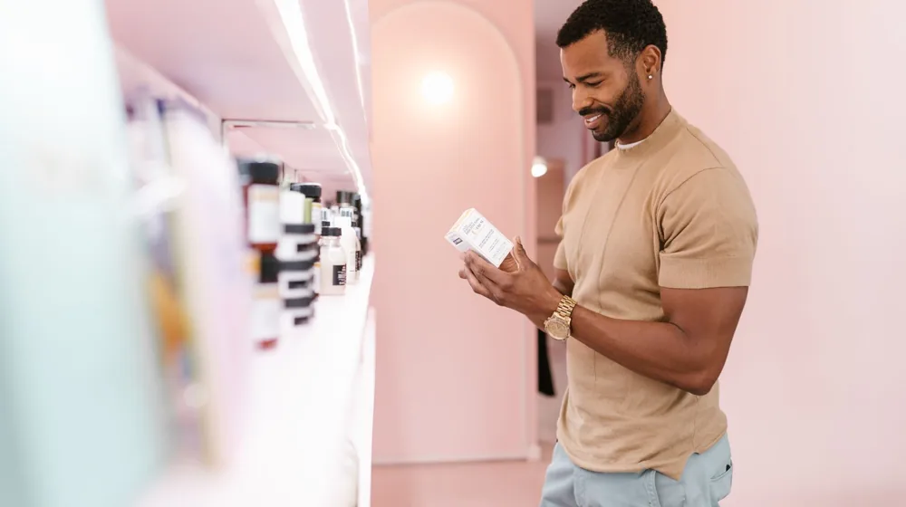

저자극 화장품 성분표, 이 3가지만 보면 속지 않습니다
사진: Yaroslav Shuraev / Pexels (무료 이미지, 출처 표기)
화장품 전성분표, 앞부분 5개에 집중해야 하는 이유

민감한 피부를 가진 분들이라면 '저자극'이라는 문구만 믿고 화장품을 샀다가 피부가 뒤집어져 곤란했던 경험이 한두 번쯤 있을 겁니다. 화장품 패키지 뒤편에 빽빽하게 적힌 전성분표를 제대로 읽는 방법만 알아도 이런 구매 실패를 크게 줄일 수 있습니다.
대한민국 식품의약품안전처의 화장품 표시 기준에 따르면, 전성분은 함량이 가장 많은 성분부터 순서대로 적도록 규정하고 있습니다. 즉, 전체 용량의 대부분을 차지하는 앞쪽 5~6개 성분이 제품의 실제 효능과 자극 여부를 결정하는 핵심 물질입니다. 아무리 좋은 진정 성분이 들어있다고 광고하더라도 성분표 맨 끝에 적혀 있다면 실제 함량은 1% 미만일 확률이 매우 높습니다.
진짜 저자극일까? 피해야 할 대표적인 주의 성분
화장품을 고를 때 민감성 피부라면 우선적으로 걸러내야 할 성분들이 있습니다. 대표적인 것이 바로 인공 향료와 인공 색소입니다. 이들은 화장품의 향과 색을 보기 좋게 만들기 위해 첨가되지만, 실제로는 알레르기성 접촉 피부염을 유발하는 가장 흔한 원인 중 하나입니다.
또한, 제품 변질을 막는 페녹시에탄올이나 파라벤 같은 방부제 성분도 주의 깊게 살펴야 합니다. 최근에는 천연 방부 대체제(예: 1,2-헥산다이올)로 대체되는 추세이지만, 세정제나 기초화장품에 보존력을 위해 들어간 특정 계면활성제(물과 기름을 섞이게 돕는 물질)가 피부 장벽을 깎아낼 수 있으므로 성분표 위치를 꼭 확인해 보세요.
내 피부에 맞는 안심 보습 & 진정 성분 가이드
민감한 피부를 부드럽게 다독여주는 안심 성분들은 따로 있습니다. 아래 표를 참고하여 현재 자신의 피부 고민에 맞는 유효 성분이 전성분표 앞쪽에 든든하게 배치되어 있는지 확인해보시길 바랍니다.
실패 없는 저자극 화장품 선택을 위한 3단계 실천법
화장품 성분 분석 애플리케이션의 등급을 100% 신뢰하기보다는 스스로 간단한 기준을 세우고 제품을 고르는 습관을 기르는 것이 좋습니다. 스마트폰 카메라를 켜고 제품 뒷면을 바라볼 때 다음 3단계를 순서대로 적용해 보세요.
첫째, 성분표 맨 앞부분에 정제수 다음으로 어떤 보습 성분이 오는지 체크합니다. 둘째, 성분표 중간이나 끝부분에 '향료(Fragrance)' 또는 '리모넨', '리날룰' 같은 알레르기 유발 주의 성분이 포함되어 있지 않은지 대조합니다. 마지막으로, 완전히 얼굴에 바르기 전에 귀 뒤쪽이나 손목 안쪽에 2~3일간 소량 테스트(패치 테스트)를 해보고 피부 반응을 살피는 것이 가장 안전합니다.
자주 묻는 질문과 주의사항
많은 분이 미국의 비영리 환경 연구 단체에서 분류한 'EWG 그린 등급' 제품은 무조건 안전하다고 믿곤 합니다. 그러나 이 등급은 해당 성분의 인체 유해성 연구 데이터가 부족하여 안전하다는 임시 판정을 받은 경우도 포함되어 있으므로 절대적인 맹신은 금물입니다.
개인마다 알레르기를 일으키는 성분은 완전히 다를 수 있습니다. 만약 특정 화장품을 사용한 뒤 피부 가려움이나 붉어짐이 지속된다면 즉시 사용을 중단하고 피부과 전문의의 진단을 받으시는 것이 피부 건강을 지키는 가장 현명한 방법입니다.
🔗 이 글도 함께 보면 좋아요: 향수 지속력 3배 높이는 법, 흔히 하는 '이 실수'만 줄이세요
관련 추천 상품
이 포스팅은 쿠팡 파트너스 활동의 일환으로, 이에 따른 일정액의 수수료를 제공받습니다.
한눈에 보는 상품 목록
피지오겔 DMT 페이셜 크림
피부 지질 구조와 유사하여 자극이 적고 보습 유지력이 우수해 민감성 피부에 적합합니다.
에스트라 아토베리어 365 크림
세라마이드, 콜레스테롤, 지방산 복합체로 민감성 피부의 장벽을 튼튼하게 가꾸어 줍니다.